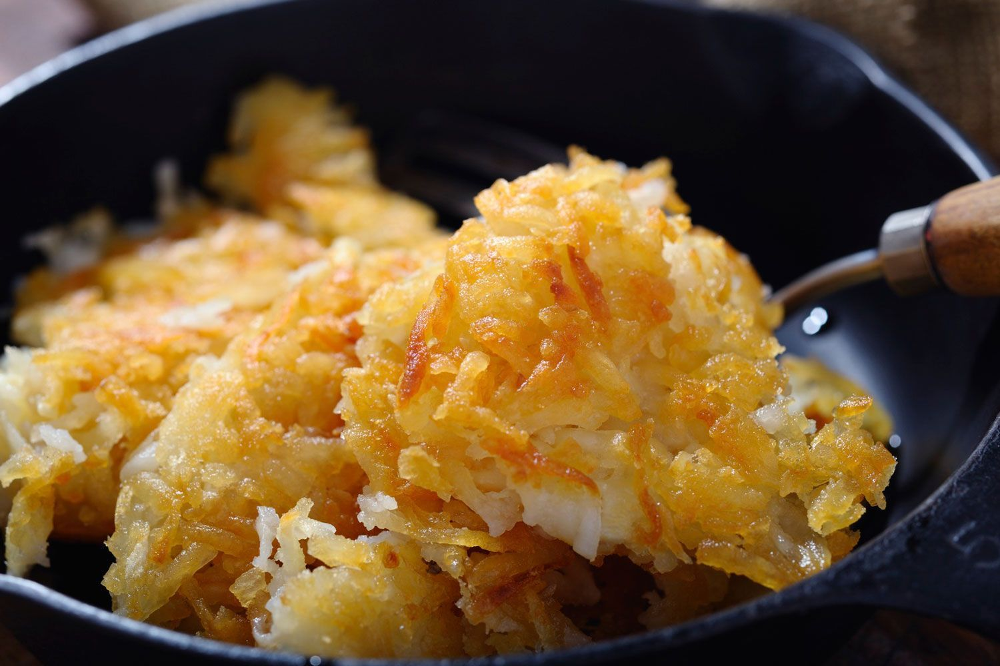

Hashbrowns

Homemade Hashbrowns
This recipe is a really nice way to use up leftover mashed potatoes.
Ingredients
- 2 cups mashed potatoes
- 1 egg, beaten
- 1 onion, finely diced
- 1/2 teaspoon salt
- 1/4teaspoon ground black pepper
- 2 tablespoons olive oil
Steps
- Beat egg in a medium size mixing bowl. Mix egg and onion with mashed potatoes. Add salt and pepper.
- Heat olive oil in a medium size frying pan, over a medium heat.
- Scoop the potato mixutre into the frying pan in 4 inch circles, pat with a spatula to flatten the mounds to approximately 1/2 to 1 inch thick.
- Cook until bottom is browned. Flip the patty over and brown on the other side.